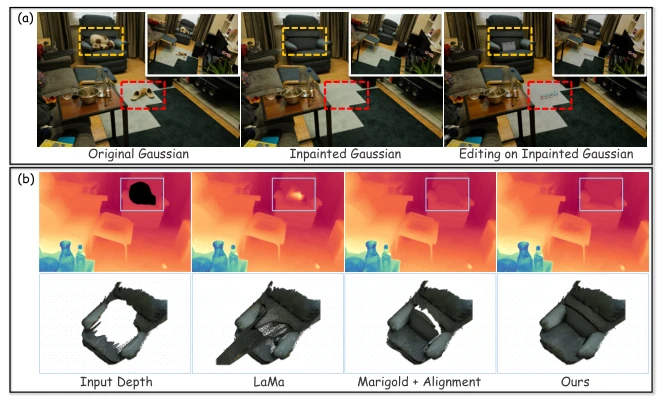
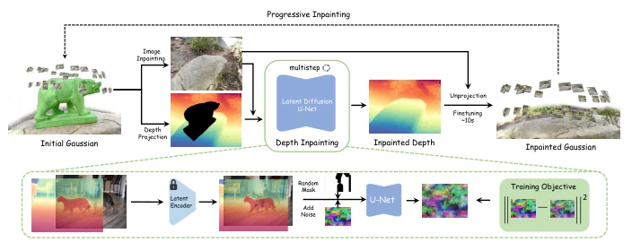
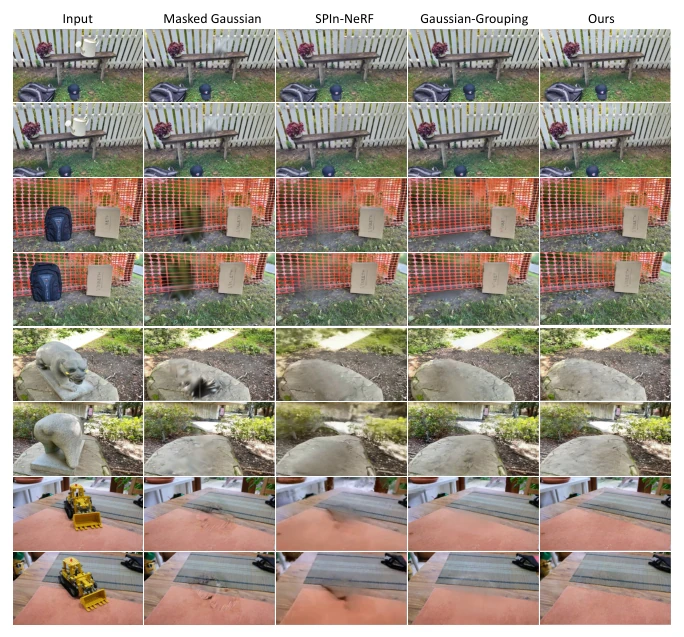
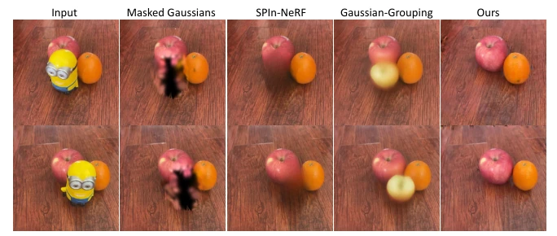
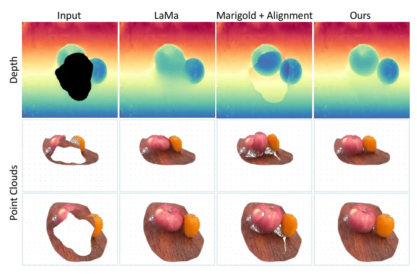
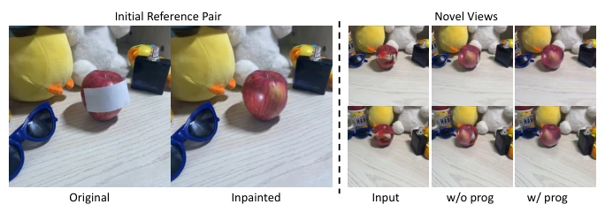
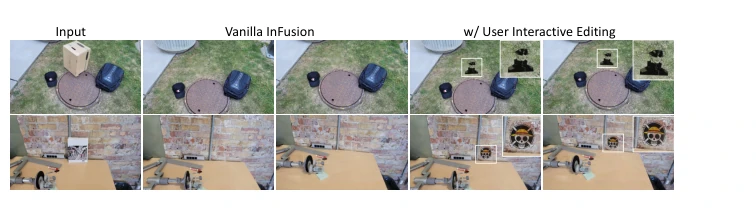
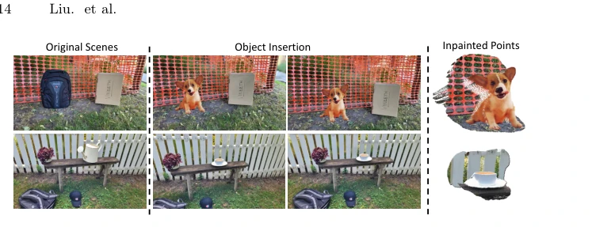
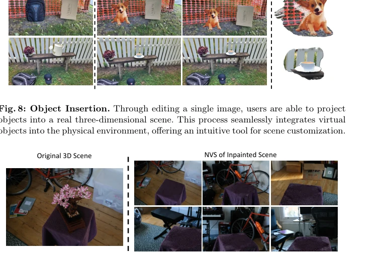

The name 'InFusion' is quite grand, can it truly 'fuse'? Actually, the core lies in one strategy: using a diffusion model to complete depth, followed by back-projection to initialize Gaussians. 3DGS editing is currently very popular, yet inpainting often suffers from either blurry textures or slow optimization. This method is indeed fast, 20 times faster than baselines, and outperforms on LPIPS and FID. However, do not overstate its capabilities; it struggles when lighting changes and cannot handle complex 360-degree scenes. Essentially, it saves optimization time by relying on accurate initial points, representing a 'clever approach' rather than 'brute force'. It is a powerful tool for teams prioritizing efficiency, but for scenarios demanding high lighting robustness, further refinement is needed, as diffusion models are not a panacea and generalization still has boundaries.
研究动机Motivation
3DGS 编辑的关键在于初始点的精准定位，现有方法多依赖边界生长或 2D 图像引导，导致纹理模糊且效率低。SPIn-NeRF [67] 和 Gaussian-Grouping [106] 虽能修补，但优化耗时且对深度依赖大。现有深度补全模型如 LaMa [92] 转 Jet 色空间有量化损失，Marigold [44] 对齐也有误差，导致 3D 点云错位。因此，亟需一种能利用大规模扩散先验、保证深度与几何一致性的补全方法，以简化后续高斯微调过程，提升编辑的保真度和效率。深度图不准，反投影就是灾难，几何一致性是核心痛点。
The key to 3DGS editing lies in the precise localization of initial points. Existing methods mostly rely on boundary growth or 2D image guidance, resulting in blurry textures and low efficiency. Although SPIn-NeRF [67] and Gaussian-Grouping [106] can perform inpainting, they are time-consuming in optimization and heavily dependent on depth. Existing depth completion models, such as LaMa [92], incur quantization loss when converting to Jet color space, and Marigold [44] alignment also introduces errors, causing 3D point cloud misalignment. Therefore, there is an urgent need for a completion method that leverages large-scale diffusion priors while ensuring depth and geometric consistency, thereby simplifying the subsequent Gaussian fine-tuning process and enhancing editing fidelity and efficiency. Inaccurate depth maps make back-projection a disaster; geometric consistency is the core pain point.

Fig. 1: We present InFusion, an innovative approach that delivers efficient, photore- alistic inpainting for 3D scenes with 3D Gaussians. As demonstrated in (a), InFusion enables the seamless removal of 3D objects, along with user-friendly texture editing and object insertion. Illustrated in (b), InFusion learns depth completion with diffusion prior, significantly enhancing the depth inpainting quality for general objects. We show the visualizations of the unprojected points, which exhibit substantial improvements over baseline models [44,92].
The overall workflow is divided into three steps: first, mask and delete target Gaussians; second, select reference views; and finally, initialize and fine-tune. The core innovation is an image-conditioned depth completion model, based on fine-tuning a U-Net on LDM, which takes RGB and depth maps as input and outputs completed depth. The depth map is encoded into latent space after normalization, concatenated with RGB features, and generated through denoising diffusion. Subsequently, the completed depth is back-projected into a 3D point cloud and merged back into the Gaussian model. For occlusions, a progressive strategy is adopted involving multi-view iterative completion. Ultimately, only 50-150 iterations of fine-tuning are required, optimized using L1 and D-SSIM losses. The model utilizes a frozen VAE encoder, replicating the depth map into three channels to ensure alignment with RGB, thereby enhancing generalization.

Fig. 2: Illustration of Infusion driven by Depth Inpainting. Top: To remove a target from the optimized 3D Gaussians, our InFusion first inpaints a selected one- view RGB image and applies the proposed diffusion model for depth inpainting to the depth projection of the targeted 3D Gaussians. The progressive scheme addresses view-dependent occlusion issues by utilizing other unobstructed viewpoints. Bottom: A detailed view of the training pipeline for the depth inpainting U-Net is presented. We employ a mask-driven denoising diffusion for training of the U-Net, which utilizes a frozen latent tokenizer by taking the RGB image and depth map as inputs.
Trained on SceneFlow and tested on Mip-NeRF and 3DGS datasets. Compared with SPIn-NeRF [67] and Gaussian-Grouping [106]. In terms of metrics, LPIPS and FID are both optimal, with time requiring only 40 seconds, 20 times faster than baselines. Ablation experiments demonstrate that the depth model and progressive strategy are crucial for occlusion handling. In terms of applications, it supports texture editing and object insertion. However, limitations are obvious; fusion appears rigid when lighting is inconsistent, and text guidance capability in complex 360-degree scenes is limited. Experiments cover forward and 360-degree scenes, proving generalization, but no real-world complex lighting tests are included, so actual deployment requires caution.

Fig. 3: Qualitative Comparison with Baselines. Zoom in for details. Our method exhibits sharp textures that maintain 3D coherence, whereas baseline approaches often yield details that appear blurred.

Fig. 4: Qualitative Comparison with Baselines. We delve into more challenging scenarios, including those with multi-object occlusion, where our method uniquely stands out by accurately inpainting the obscured missing segments.

Fig. 5: Ablation study on depth inpainting, we present comparative results against widely-used other baselines, along with the corresponding point cloud visualizations. The comparisons distinctly reveal that our approach successfully inpaints shapes that are correctly aligned with the existing geometry.

Fig. 6: Ablation study on progressive inpainting. InFusion can adeptly handle inpainting tasks for views that substantially deviate from the initial reference frames.

Fig. 7: User-interactive Texture Inpainting. InFusion allows users to modify the appearance and texture of targeted areas with ease.

Fig. 8: Object Insertion. Through editing a single image, users are able to project objects into a real three-dimensional scene. This process seamlessly integrates virtual objects into the physical environment, offering an intuitive tool for scene customization.

Fig. 9: Limitations. As the lighting of the surrounding region increasingly differs from the reference, the inpainted area becomes less harmonious with these views. InFusion struggles to adapt inpainted regions to variations in lighting conditions.